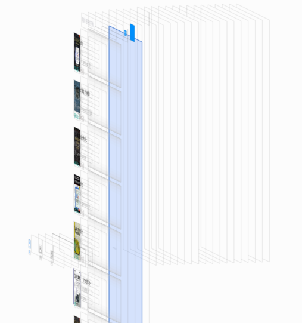

上面3张图片，如果去掉第一张图的“HybirdApp”的字样，是否分得清哪个是React Native开发？哪个是Native应用。
你的第一感觉是什么？
@王利华，vczero
“存在即合理”。凡是存在的，都是合乎规律的。任何新事物的产生总要的它的道理；任何新事物的发展总是有着取代旧事物的能力。React Native来的正是时候，一则是因为H5发展到一定程度的受限；二则是移动市场的迅速崛起强调团队快速响应和迭代；三则是用户的体验被放大，用户要求极致的快感，除非你牛x（例如：12306最近修改手机号需要用户自己发短信接收验证码）。
以下简单的介绍下H5、React Native、Native的含义：
最近三四年间，国内外的前端与全栈开发者社区都在坚持不懈地追寻使用JavaScript与HTML、CSS技术体系开发App内场景的核心工程技术。这种技术，在国内很多公司与团队中，被通称为H5。——童遥
这段是取自童老师给小二我新书作的序，没有断章取义的意思。很清楚，H5并不是狭义的HTML5新标签和API，而是工程化的“In App” technology。
iOS/Android ——原生应用（都懂得，不解释）。
React Native —— React & Native ，应运而生！
React Native的出现，似乎是扛起的反H5的旗子。就像当年Facebook放弃H5，全部转向Native一样。这一点，我们需要认同和保持高度的清醒。那么，React Native是否又是在吞食Native的领地呢？技术的发展，是用户风向标的导向起的作用。任何一门技术的出现，都是当时用户需求的体现。
我们应该从以下几点看待React Native的出现。
"鉴往知来"——从过去的教训中总结经验，从用户的角度开拓未来
“HTML5差强人意，但是与原生应用相比还是有些差距”——为了更高的追求！ 用户体验！
“人才宝贵，快速迭代”——Web开发者相对较多，寻找平衡点
“跨平台！跨平台！跨平台！”——单一技术栈
“xx是世界上最好的语言” ——工程学的范畴，没有最好，只有最适合
HTML5 vs React Native ? HTML5 : React Native
结论（React Native）：
1、原生应用的用户体验
2、跨平台特性
3、开发人员单一技术栈
4、上手快，入门容易
5、社区繁荣
注：以下所有对比均在iOS平台下
上面3张图片，如果去掉第一张图的“HybirdApp”的字样，是否分得清哪个是React Native开发？哪个是Native应用。
你的第一感觉是什么？
为了评估3种方案的技术优势和弱势。我们需要开发功能大致相似的App。这里，我们使用了“豆瓣”的API来开发“豆搜”应用。该应用能够搜索“图书”、“音乐”、“电影”。想当年，豆瓣以“图书评论”走红，尤其是12年当红！豆瓣是一个清新文艺的社区，一个“慢公司”。最近有一则网传消息，注意是网传——“传京东投1.5亿美元控股豆瓣”。今天，不聊豆瓣，我们要聊一个工程化的问题。
我们需要将3款App的功能做到一致，同时需要保持技术要点一致。比如React Native这里使用了TabBar，那么Native我们也必须使用TabBar。简单而言就是：功能一致，组件 & API一致。我们功能如下图所示：

1、H5方案
在H5/Hybird应用中，我们使用AngularJS开发单页webApp，然后将该WebApp内嵌入到iOS WebView中，在iOS代码中，我们使用Navigation稍微控制下跳转。
WebApp地址：http://vczero.github.io/search/html/index.html
WebApp项目地址：https://github.com/vczero/search （很简单的一个项目）
H5/Hybird项目地址：https://github.com/vczero/search_Hybird
2、React Native
在React Native中，封装必要的功能组件。
项目地址：https://github.com/vczero/React-Dou。
项目结构如下图：
3、Native(iOS)
使用React Native大致相同的组件开发App，不使用任何第三方库，代码布局。
项目地址：https://github.com/vczero/iOS-Dou
很多时候，新技术的采用最希望看到的是数据，而不是简单说“用户体验棒，开发效率高，维护成本低”。不过，生活中也有这样的同学，知一二而能窥全貌。当然，本人生性胆小，也没有那么多的表哥和隔壁的老王，所以不敢早下定论，不敢太放肆。赵本山在《大笑江湖》中有句名言“May the force be with you”（别太放肆,没什么用）。因此，从以下几个方面做一个简单的对比。
－－－－－－－－－－提纲－－－－－－－－－－－－
（1）代码结构
（2）UI布局
（3）UI截面图
（4）路由／Navigation
（5）第三方生态链
（1）内存
（2）CPU
（3）动画
（4）安装包体积
（5）Big ListView
（6）真机体验
（1）更新能力
（2）维护成本
－－－－－－－－－－提纲－－－－－－－－－－－－
很多人说React Native的代码不好看，不好理解。那是因为前端工程师都熟悉了Web的开发方式。怎么解决这个问题呢，可以先看看iOS代码，断定不熟悉iOS的同学心里会默念“一万匹**马奔腾”。那时候，你再看React Native，你会觉得使用React Native开发App是件多么美好的事！OK，我们先来看下三者在开始“一款简单App”的代码结构。
（1）代码结构
H5/Hybird的开发模式，我们需要维护3套代码，两套是Native（iOS/Android）代码，一套是WebApp版本。这里，我们使用AngularJS作为WebApp单页开发框架。如下图所示。
在React Native中，同样需要关注部分的Native代码，但是大部分还是前端熟悉的JavaScript。在“豆搜”应用中，代码结构如下：

在Native开发中，更加强调Native开发者的能力。平台是：iOS/Android。
结论：从前端角度而言，React Native跨平台特性，不要开发者深入的了解各平台就能开发一款高效App。同时，语言层面而言，JavaScript运用很广泛，入门门槛相对较低。React Native虽然抛弃了MVC分离实践，但是从业务角度而言，更为合理。一切而言：对前端，对移动领域是利好的消息。
（2）UI布局
“面容姣好”，合理的UI却总是跟着时间在变。那么UI布局就不是小事。
Web开发布局目前大多是 DIV + CSS。
React Native的布局方式是Flexbox。
//JSX
<ScrollView style={styles.flex_1}>
<View style={[styles.search, styles.row]}>
<View style={styles.flex_1}>
<Search placeholder="请输入图书的名称" onChangeText={this._changeText}/>
</View>
<TouchableOpacity style={styles.btn} onPress={this._search}>
<Text style={styles.fontFFF}>搜索</Text>
</TouchableOpacity>
</View>
{
this.state.show ?
<ListView
dataSource={this.state.dataSource}
renderRow={this._renderRow}
/>
: Util.loading
}
</ScrollView>
//样式
var styles = StyleSheet.create({
flex_1:{
flex:1,
marginTop:5
},
search:{
paddingLeft:5,
paddingRight:5,
height:45
},
btn:{
width:50,
backgroundColor:'#0091FF',
justifyContent:'center',
alignItems:'center'
},
fontFFF:{
color:'#fff'
},
row:{
flexDirection:'row'
}
}); 而Native布局就有种让你想吐的感觉，尤其是iOS的布局。这里不是指采用xib或者Storyboard，而是单纯的代码，例如添加一个文本：
UILabel *publisher = [[UILabel alloc]init];
publisher.frame = CGRectMake(bookImgWidth + 10, 50, 200, 30);
publisher.textColor = [UIColor colorWithRed:0.400 green:0.400 blue:0.435 alpha:1];
publisher.font = [UIFont fontWithName:@"Heiti TC" size:13];
publisher.text = obj[@"publisher"];
[item addSubview:publisher]; 总结：React Native既综合了Web布局的优势，采用了FlexBox和JSX，又使用了Native原生组件。比如我们使用一个文本组件。
<Text style={{width:100;height:30;backgroundColor:'red'}}>测试</Text>
（3）UI截面图
Hybrid方式截面图
可以看到第一层列表页是完整的布局，实际上这就是Web页面；而第二层灰色的是Native的WebView组件。
iOS UI截面图

可以看到Native页面的组件特别多，即使是列表页，其中某一项都是一个组件（控件）。
当然，我们就会想，能够完全调用原生组件呢？那样性能是否更好？
React Native UI截面图

可以清楚的看到React Native调用的全部是Native组件。并且层次更深，因为React Native做了组件的封装。如上图，蓝色边框的就是RCTScrollView组件。
（4）路由／Navigation
在Web单页面应用中，路由由History API实现。
而React Native采用的路由是原生的UINavigationController导航控制器实现。
React Native NavigatorIOS组件封装程度高；Navigator可定制化程度高。
Navigator方法如下：
getCurrentRoutes() - returns the current list of routes
jumpBack() - Jump backward without unmounting the current scene
jumpForward() - Jump forward to the next scene in the route stack
jumpTo(route) - Transition to an existing scene without unmounting
push(route) - Navigate forward to a new scene, squashing any scenes that you could jumpForward to
pop() - Transition back and unmount the current scene
replace(route) - Replace the current scene with a new route
replaceAtIndex(route, index) - Replace a scene as specified by an index
replacePrevious(route) - Replace the previous scene
immediatelyResetRouteStack(routeStack) - Reset every scene with an array of routes
popToRoute(route) - Pop to a particular scene, as specified by its route. All scenes after it will be unmounted
popToTop() - Pop to the first scene in the stack, unmounting every other scene 相对Native而言，这些接口更Native还是很相似的。
//iOS UINavigationController
//相对Web而言，不用自己去实现路由，并且路由更加清晰
[self.navigationController pushViewController:detail animated:YES];"豆搜" WebApp路由（基于AngularJS）如下：

"豆搜" React Native版本导航如下：
"豆搜" iOS版本导航代码如下：
总结：React Native封装的导航控制更容易理解。
（5）第三方生态链
“我的是我的，你的也是我的。 ”——我不是“疯狂女友”，我是React Native！
我们缺少“城市列表”组件，OK，使用JSX封装一个；觉得性能太低，OK，基于React Native方案封装一个原生组件。
这个iOS图表库不错，拿来用呗！ => 完美！
这一切都是基于React Native提供的模块扩展方案。
所以说：iOS第三方库 + 部分JavaScript库 ＝ React Native 生态库
我们都很关注一款App性能。因此测试和体验App的性能很重要。以下测试，都是基于相同的case。
测试平台：模拟器，iphone6，iOS8.4
（1）内存
首先，我们来看下Native应用占用的内存情况。一开始，原生应用启动后，占用内存是20~25M；针对相同的case，跑了2min，结果如下图：
可以看出，峰值是87.9M，均值是72M；内存释放比较及时。
我们再来看下Hybird App的情况。App已启动，占用内存35~55M;同样，跑了2min以上，结果如下图：
可以看出，峰值在137.9M，因为整个应用在WebView中，内存释放不明显，存在缓存。
最后，看下React Native的情况。App启动占用内存35～60M，同样跑2min以上，结果如下图：

可以看出，峰值在142M，内存相对释放明显。
总结：React Native和Web View在简单App上相差不大。二者主要：内存消耗主要是在网页数据上。
（2）CPU
我们可以看一下Native应用程序CPU的情况，最高值在41%。

Hybird App的最高值在30%。

React Native的最高值在34%。

总结：CPU使用率大体相近，React Native的占用率低于Native。
（3）动画
React Native提供了Animated API实现动画。简单效果，基本OK。个人觉得React Native不适合做游戏，尤其布局能力。
Native Animation提供UIView动画
H5/Hybird：采用js动画能力
总结：React Native Animated API / 封装Native动画库 可以满足基本需求
（4）安装包体积
Hybird App:
34(App壳) + 5(HTML) + 125(Angular) + 29(An-route) + 6(min.js) + 4(min.css) = 203 KB。
React Native:
不含bundle: 843KB
含bundle: 995KB
Native
83KB
React Native框架包大小
843(不含bundle) - 32(Hybird_app空壳，初识项目) = 811KB
相比快速迭代和热更新，比Native多了811KB一点都不重要，我们将图片素材、静态资源线上更新缓存起来即可减少很多体积。
总结：牺牲一点体积，换更大的灵活性！（世界上哪有那么美的事，除非丑，就会想得美，:) ）。
（5）Big ListView & Scroll 性能
循环列表项500次:
H5页面惨不忍睹
React Native还可以接受
Native 采用UITabView更高效，因为不渲染视图外部分。
（6）真机体验
机型：iphone4s，iOS7
Native > React Native > Hybird
如果非要给个数字的话，那我个人主观感受是：
Native： 95％＋ 流畅度
React Native: 85~90% 流畅度
H5/Hybird： 70% 流畅度
总结：Native／React Native的体验相对而言更流畅。
（1）更新能力
H5/Hybird： 随时更新，适合做营销页面，目前携程一些BU全部都是H5页面；但是重要的部分还是Native。
React Native：React Native部分可以热更新，bug及时修复。
Native：随版本更新，尤其iOS审核严格，需要测试过关，否则影响用户。
（2）维护成本
H5/Hybird： Web代码 ＋ iOS/Android平台支持
React Native：可以一个开发团队 ＋ iOS/Android工程师；业务组件颗粒度小，不用把握全局即可修改业务代码。
Native：iOS/Android开发周期长，两个开发团队。
总结：React Native 统一了开发人员技术栈，代码维护相对容易。
（1）代码结构： React Native更为合理，组件化程度高
（2）UI布局：Web布局灵活度 > React Native > Native
（3）UI截面图：React Native使用的是原生组件，
（4）路由／Navigation：React Native & Native更胜一筹
（5）第三方生态链：Native modules + js modules = React Native modules
（1）内存：Native最少；因为React Native含有框架，所以相对较高，但是后期平稳后会优于Native。
（2）CPU：React Native居中。
（3）动画：React Native动画需求基本满足。
（4）安装包体积：React Native框架打包后，811KB。相比热更新，可以忽略和考虑资源规划。
（5）Big ListView
（6）真机体验：Native >= React Native > H5/Hybrid
（1）更新能力: H5/Hybird > React Native > Native
（2）维护成本: H5/Hybird <= React Native < Native
React Native定制难度相比Native有些大；但是具备跨平台能力和热更新能力。
最后硬广一下我的书：